机器学习
机器学习
经典定义：利用经验改善系统自身的性能[T.Mitchell 教科书，1997]
典型的机器学习过程
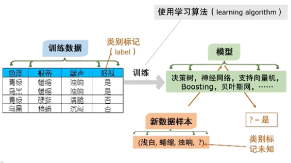
机器学习有坚实的理论基础
计算学习理论（Computational learning theory)
最重要的理论模型：
PAC（Probably Approximately Correct，概率近似正确）learning model [Valiant, 1984]
基本术语
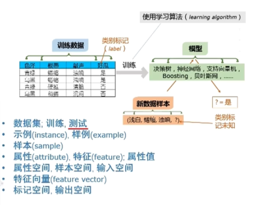
-
instance是没有结果的；example是有结果的 -
假设（hypothesis):
-
真相（ground-truth):
- 学习器（learner）：学到的模型
关于输出部分的术语：
- 分类，回归
- 二分类，多分类
- 正类，反类
- 正类不一定就是好西瓜，坏西瓜也可能是正类。这只是对A和B的一种抽象的说法。
- 通常认为这两类是可交换的。
- 可交换意味着这两类满足的很多性质是差不多的，比如在数据集里，这两类的比例是差不多的。
关于学习任务：
- 监督学习（supervised learning)：样例有结果就是有监督学习
- 典型任务：预测内容，分类，回归
- 无监督学习（unsupervised learning)：样例没结果就是无监督学习
- 离散类别的，做聚类，做密度估计
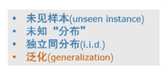
归纳偏好（inductive Bias）
对某一种东西有特别的喜好
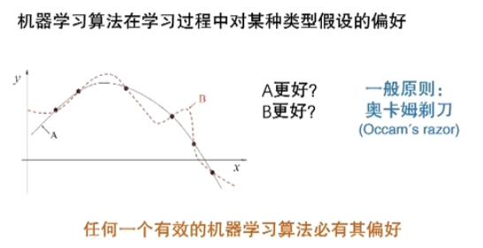
- 奥卡姆剃刀准则：若非必要，勿增实体
NFL定理
哪个算法更好？
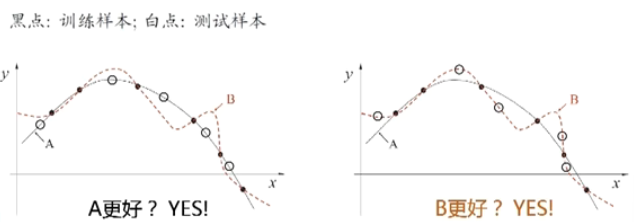
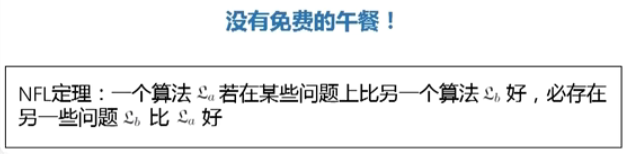
NFL（No Free Lunch）的寓意：
现实机器学习应用中……
什么模型好？
泛化能力
典型的机器学习过程
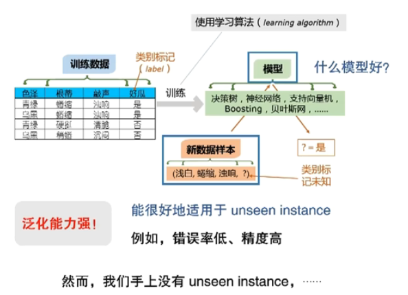
一方面，搞清楚要什么；另一方面，还要知道我给你的是不是你要的。
过拟合和欠拟合
泛化误差 VS 经验误差
泛化误差：在‘未来’样本上的误差
经验误差：在训练集上的误差，亦称‘训练误差’
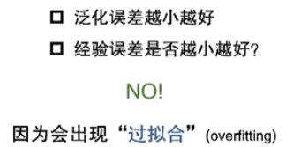
例如：
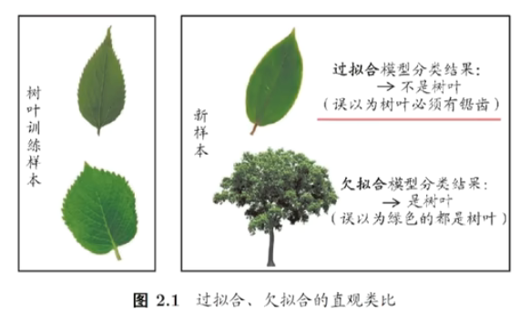
overfitting是机器学习里的核心内容。
所有的算法，所有的技术都是在“缓解”overfitting。
学习算法思考两个问题：
- 它靠什么来缓解
overfitting - 它缓解
overfitting的策略什么时候会失效
如果这两个问题清楚了，就把握了该算法在什么时候用。
三大问题
模型选择（Model Selection)
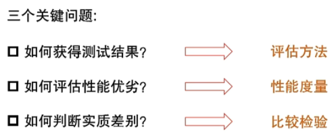
评估方法
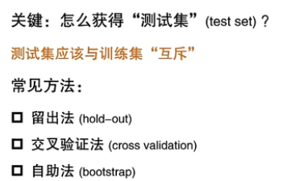
留出法
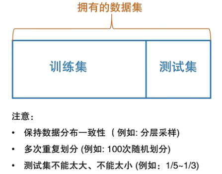
k-折（fold）交叉验证法
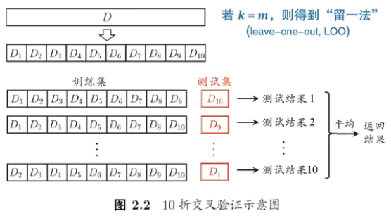
自助法
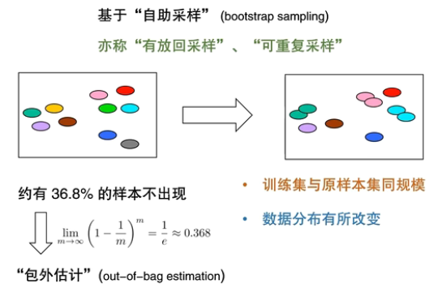
调参与验证集
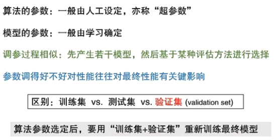
性能度量
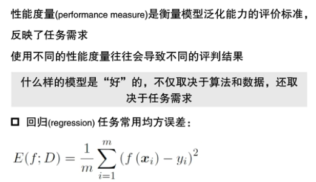
错误率 VS 精度
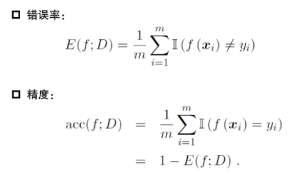
查准率 VS 查全率
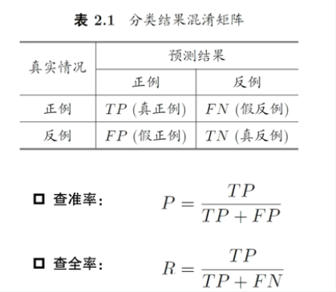
F1
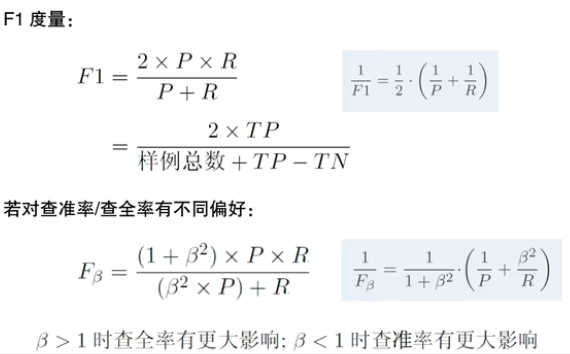
比较检验
常用方法
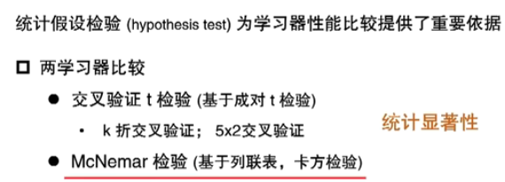
线性模型
线性模型
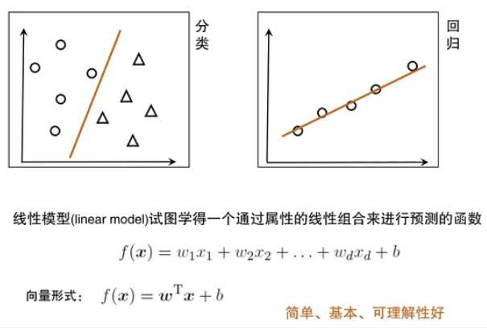
线性回归（Linear Regression）
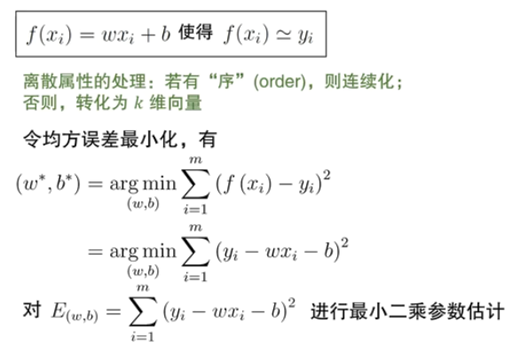
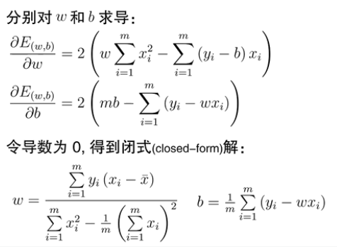
多元线性回归
多元（Multi-variate)线性回归
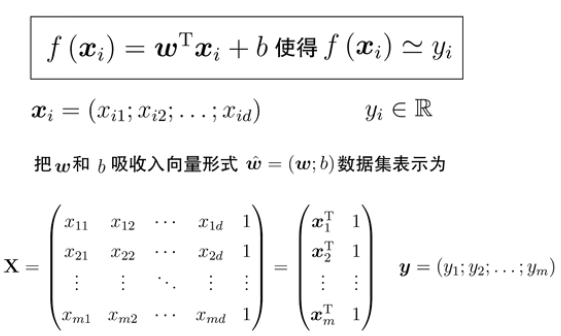
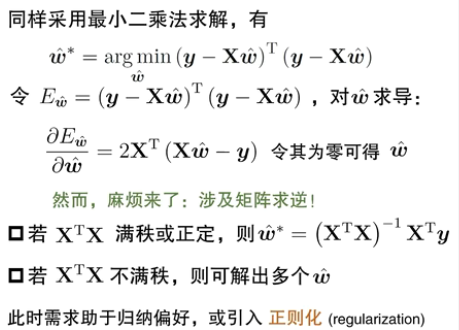
广义线性模型
线性模型的变化
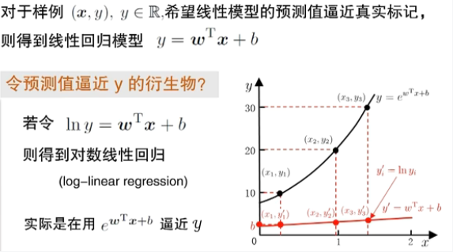
广义（Generalized）线性模型
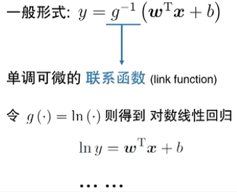
对率回归
二分类任务
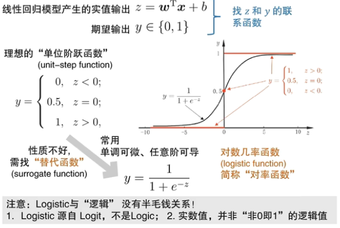
对率回归
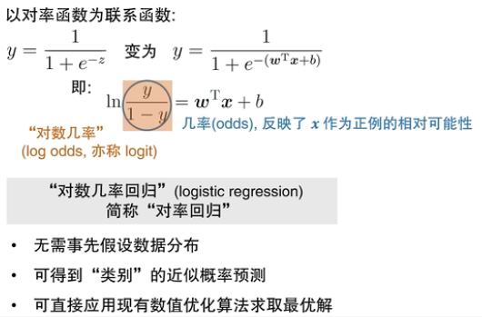
对率回归求解
求解思路：
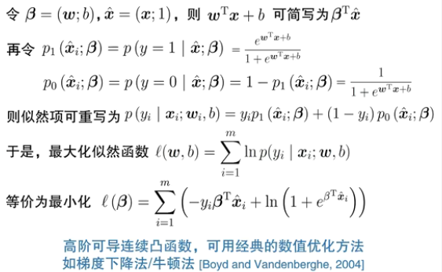
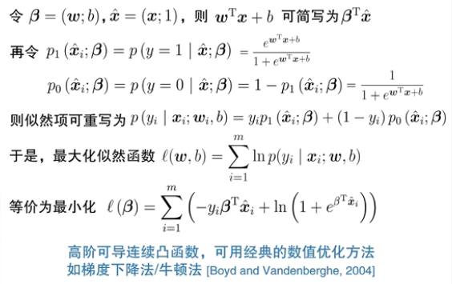
线性判别分析
线性模型做“分类”
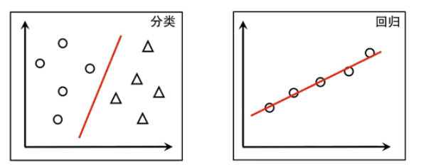
线性判别分析（Linear Discriminant Analysis)
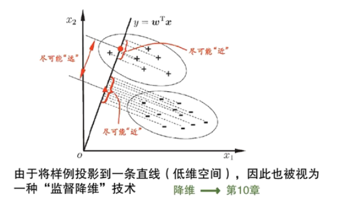
LDA的目标
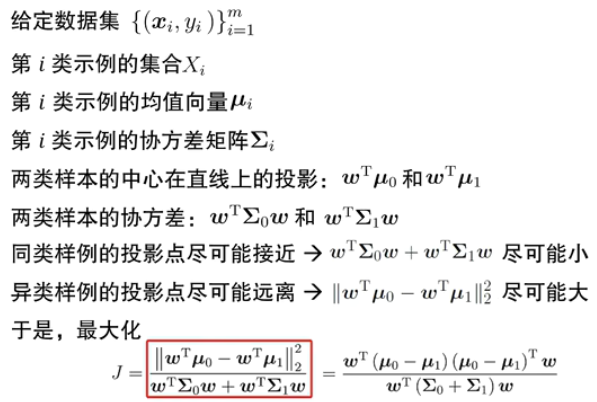
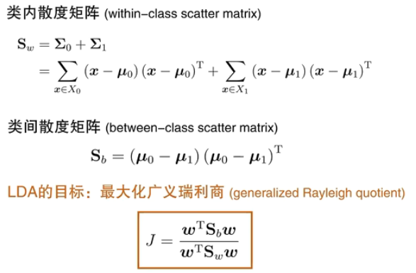
以下公式推导涉及矩阵求导，拉格朗日算子法等数学基础
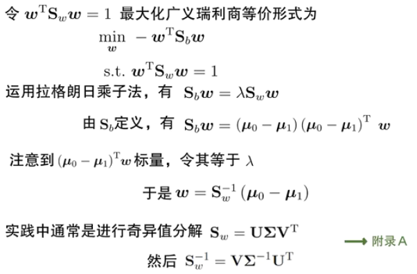
LDA的多类推广
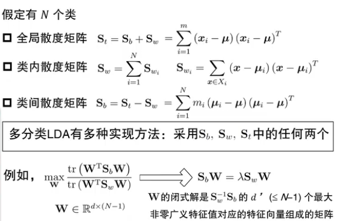
多分类学习的基本思路
多分类学习
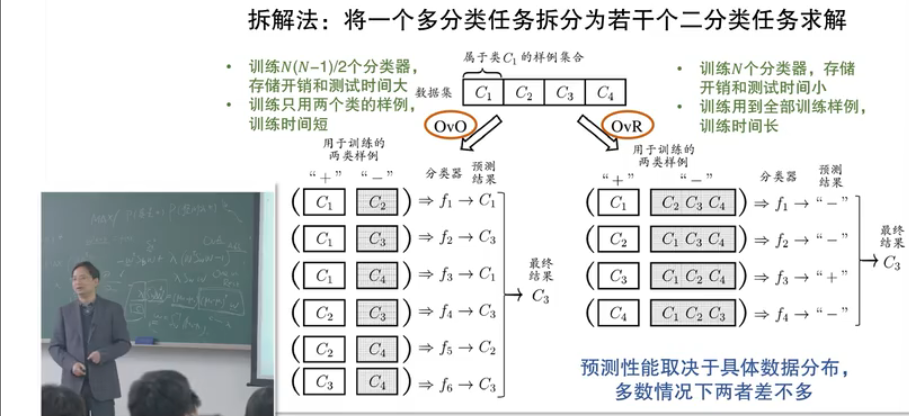
类别不平衡（class-imbalance)
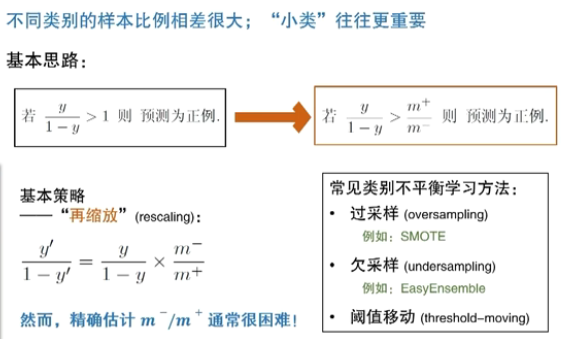
过采样(SMOTE)和欠采样（easy emsemble)
决策树
决策树基本流程
决策树模型
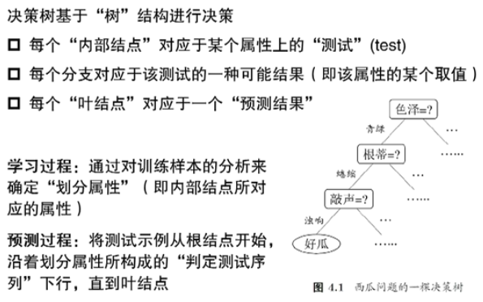
基本流程
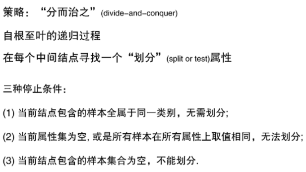
基本算法
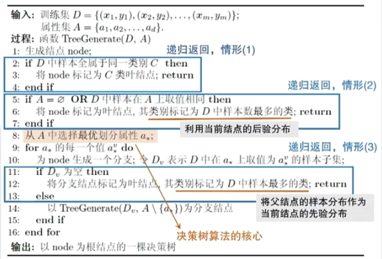
信息增益划分
信息增益（Information Gain）
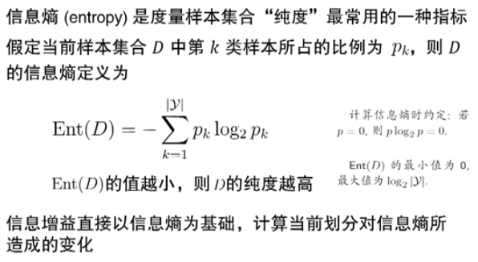
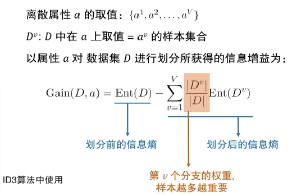
一个例子
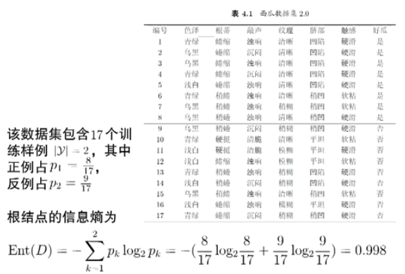
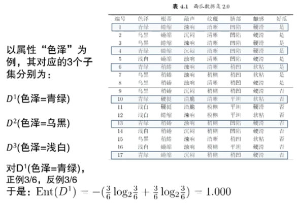
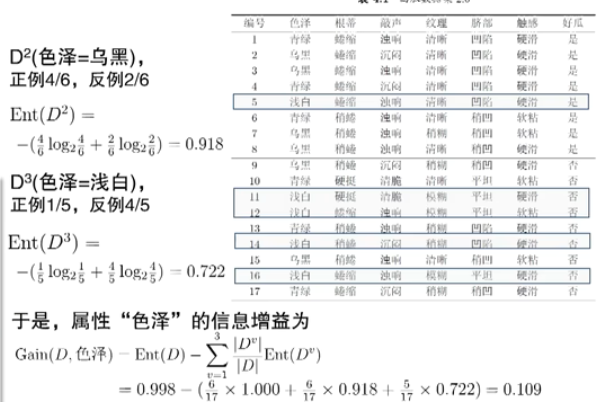
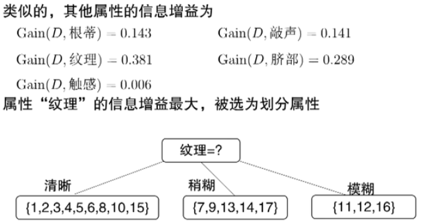
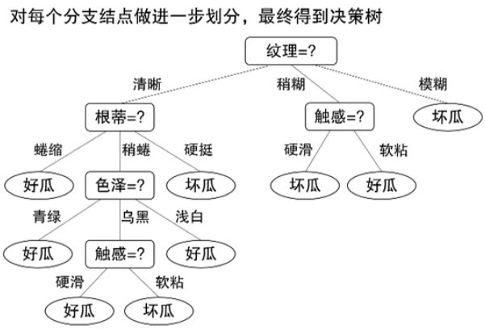
其他属性划分准则
增益率（Gain Ratio)
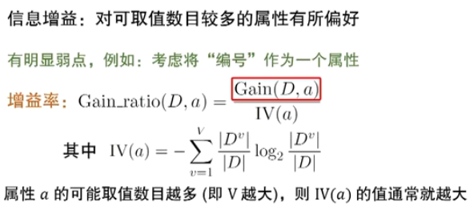
基尼指数（Gini Index）
划分选择 VS. 剪枝
决策树剪枝
通常，要使用单个决策树，要选择剪枝的。
剪枝
第2章：模型的评估
缺失值处理
缺失值
一个例子
神经网络
神经网络模型
什么是神经网络？
“简单单元”神经元模型
神经元的“激活函数（Activation function）”
响应函数 挤压函数（Squashing Funciton)
多层前馈网络结构
-
每一类一个节点
-
中间的是隐藏层（隐藏神经元）
万有逼近能力
BP算法推导
支持向量机
支持向量机
线性分类器回顾
间隔（Margin）与支持向量（Support Vector)
支持向量机基本型
对偶问题与解的特性
对偶问题
解的特性
求解方法
求解方法-SMO
特征空间映射
在特征空间中
核函数（Kernal Function）
如何使用SVM
以回归学习为例
ε-不敏感（Insensitive）损失函数
支持向量回归（SVR）
现实应用中
如何使用SVM？
- 入门级——实现并使用各种版本SVM
- 专业级——尝试、组合核函数
- 专家级——根据问题而设计目标函数、替代损失、进而……